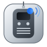

Local-first review continuity, always on your PR page.
Manual Backup Controls
Checking active tab context…
Build and fallback details
Extension build unavailable.
Use this popup only as a manual backup when in-page Roger controls are unavailable.